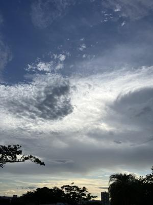
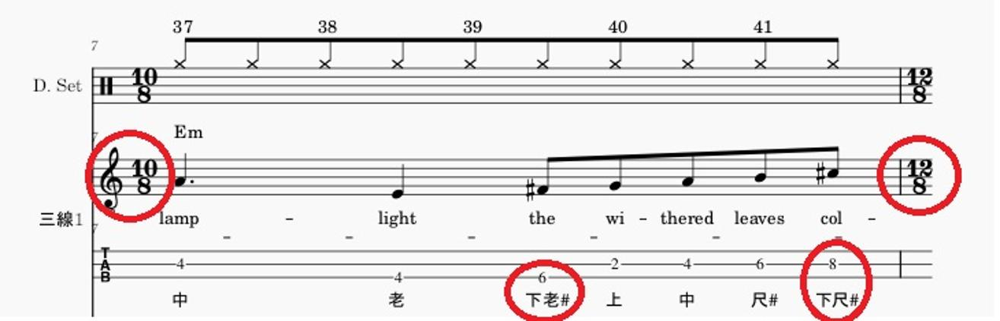
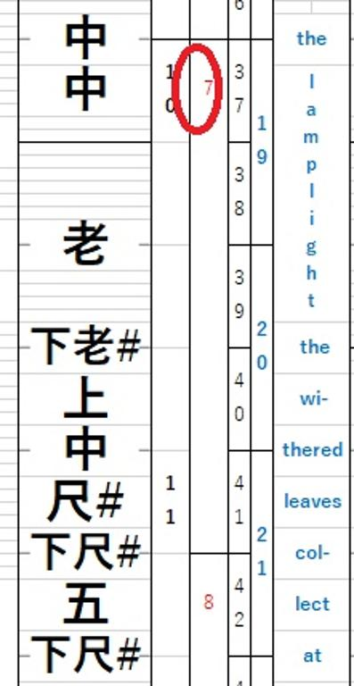

うるがいの話 ある日
最新: 工工四【うるがいの話 ある日】とは 一日だけのプログです
『うるがいの話』の最新一日だけのプログで、通信料が少なく経済的だ。カニの画像をクリックすると全ての日付が載る『うるがいの話』サイトを表示します
|
|
【うるがいの話】 うるがい(ｳﾙｶﾞｲ urugai)とは、『もずくがに』の名前でとても大きくなります。 |
|---|---|
|
|
【カミマヤーの話】 猫のことを方言でマヤーといいます。カミマヤー（kamimayaa）とは、神の猫のことです。 |
|
【たながぁの音楽】 たながぁ（ﾀﾅｶﾞｰ tanagaa）とは手長えびのことで、何種類かあり大きいのは車 エビぐらいになります。 |

|
【ぶながぁの話】 ぶながぁ(ﾌﾞﾅｶﾞｰ bunagaa)とは、赤い髪の毛、赤い身体、そして身長は１ｍ２０ｃｍ ぐらい、川の蟹を食べているの目撃された。場所は沖縄県国頭郡大宜味村のと ある村僕の隣近所に住んでいる爺さんから、聞いた話です。 |
|
|
【ギーマの話】 ギーマ(giima)とは、山原の里山に咲くスズランに似た、 花を付けます。実は食べられます、 気が付くと口の周りが紫になっています。 |
2025年06月26日 (木）工工四
15:04

『Ｍｅｍｏｒｙ（ＣＡＴＳ）』の工工四が、かなりの自動化をプロ
グラムで作成出来ました。作ったのは私ですが、なぜ上手く出来た
のか不思議なのだが。
楽譜７小節（MuseScore)

工工四の７小節（エクセルシート）

@地球に監禁された人
3 年前（2022年01月13日のコメント
楽譜読めなくて、クンクンシー教えてくれるととても嬉しいです！
いよいよ、３年前の 『いつかは考慮いたします』の実行を果たす
べく『イェスタディ 三線』の工工四を作成しよう。
ちなみ作成した工工四は、これです。まず、手作業では無理ですネ。
拍数が、頻繁に変わるんですよ！。あ、歌詞は手打ちです。
楽譜
工工四
三線１（メロディー）
三線２（ベース）
ユーチューブ動画は、長いけど
『Ｍｅｍｏｒｙ（ＣＡＴＳ） 三線 二胡 工工四』
４分２８秒
https://youtu.be/dNZbk6iZ8aY